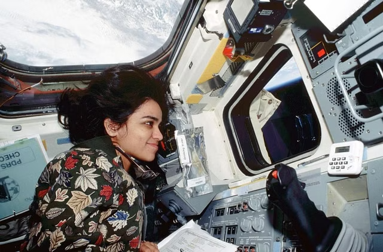

"You must enjoy the journey because whether or not you get there, you must have fun on the way."
Kalpana Chawla is an iconic figure in the history of space exploration, renowned as the first
Indian-born
American woman to venture into space. Her journey represents not only a significant milestone in space
exploration but also stands as a testament to determination, resilience, and the pursuit of excellence.
Born on March 17, 1962, in Karnal, Haryana, India, Kalpana Chawla's fascination with the skies began
at a young
age. Growing up, she was inspired by the stars and dreamed of one day reaching beyond the Earth's atmosphere.
Her passion for aviation and space science led her to pursue a degree in aeronautical engineering from Punjab
Engineering College in Chandigarh, India. She later earned a Master of Science degree in aerospace engineering
from the University of Texas at Arlington and a Ph.D. in aerospace engineering from the University of Colorado
Boulder.
Chawla's career took flight when she joined NASA (National Aeronautics and Space Administration) in
1988. Her
dedication, intelligence, and expertise in aerospace engineering quickly caught the attention of NASA officials,
leading to her selection as an astronaut candidate in 1994. She underwent rigorous training and preparation,
demonstrating her capabilities in various simulations and tests.

On November 19, 1997, Kalpana Chawla achieved her lifelong dream when she flew aboard the Space
Shuttle Columbia
mission STS-87 as a mission specialist and primary robotic arm operator. This historic flight made her the first
woman of Indian origin in space. During her time in space, she conducted various experiments and contributed
significantly to scientific research.
Chawla's achievements extended beyond her first mission. She was selected for her second spaceflight
aboard the
Space Shuttle Columbia mission STS-107, scheduled for launch in 2001. Tragically, the mission ended in disaster
when the Space Shuttle disintegrated upon re-entry into Earth's atmosphere on February 1, 2003, leading to the
loss of all crew members, including Kalpana Chawla.
Despite the heartbreaking end to her life, Kalpana Chawla's legacy continues to inspire millions
around the
world. She exemplified the spirit of exploration, courage, and perseverance. Her contributions to space science
and engineering opened doors for future generations of astronauts, particularly women and individuals of diverse
backgrounds, to pursue their dreams of space exploration.
Kalpana Chawla's name is etched in the stars, reminding us of the heights humanity can achieve when
driven
by
passion, dedication, and a relentless pursuit of knowledge. Her story serves as a beacon of hope and motivation
for aspiring scientists, engineers, and explorers worldwide, urging them to reach for the stars and beyond.
(Generated using gpt)
(Photograph courtesy NASA)